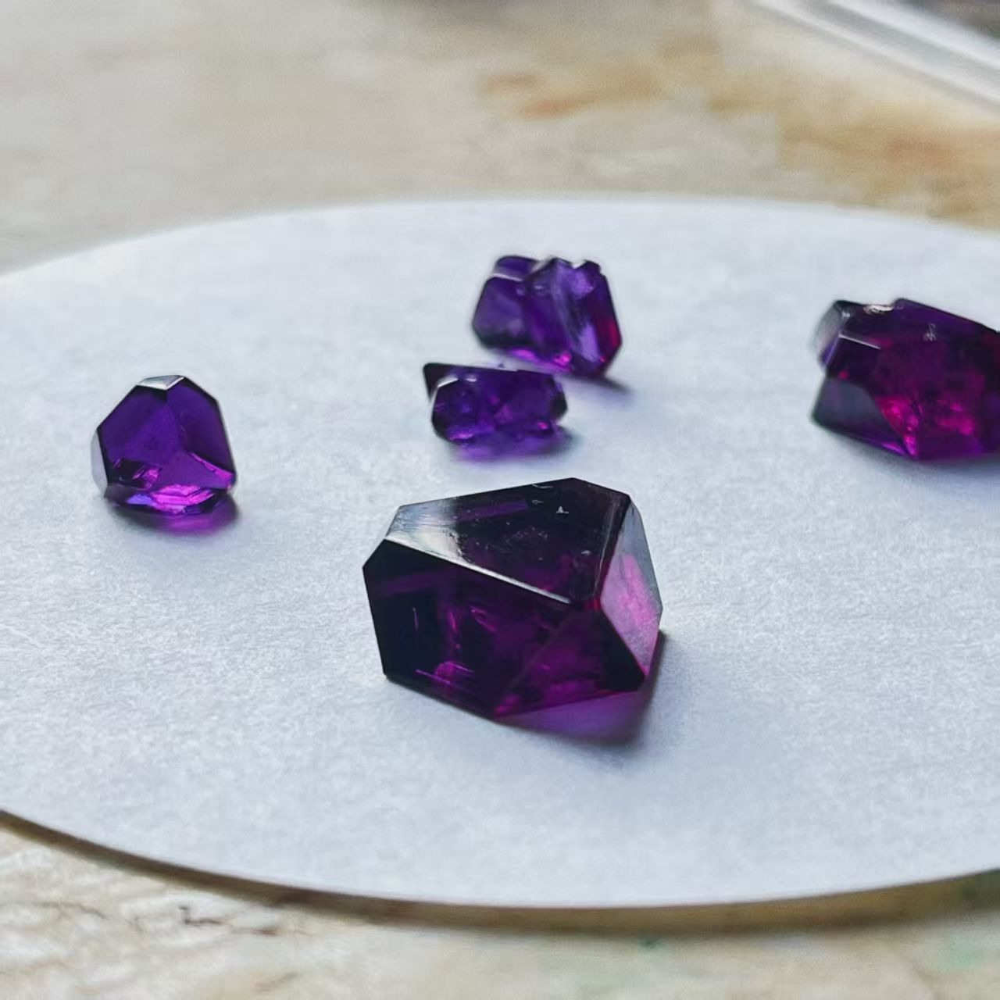
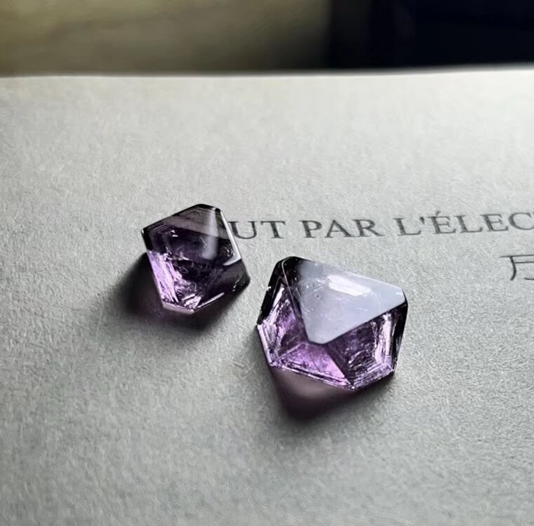
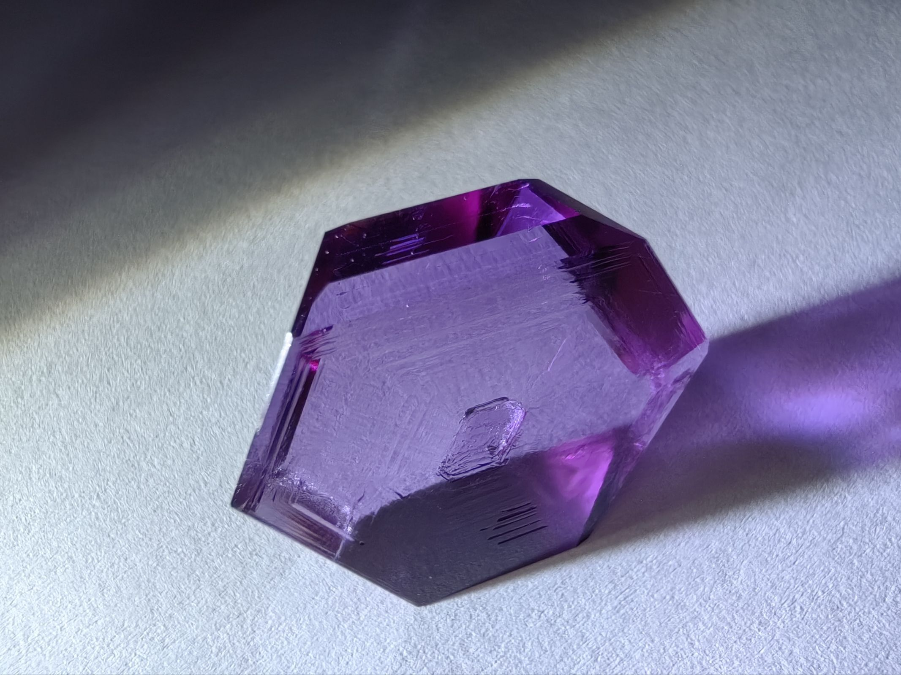
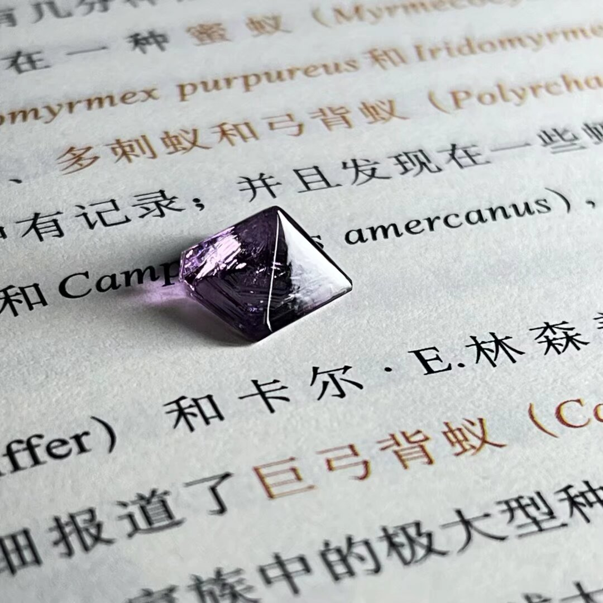

图源：LX虫管吖Galvin


图源：紫色硫酸铜
混合体系：KAl(SO4)2·12H2O + KCr(SO4)2·12H2O
目标：配制500ml铬明矾混晶溶液

图源：LX虫管吖Galvin丨几率获得金字塔形
材料：混合溶液、培养皿、过滤材料、镊子
材料：混合溶液、烧杯、透明鱼线、晶种、支撑杆
材料：硫酸铝钾溶液、铬明矾混合溶液、透明晶种、透明鱼线
如果您想通过视频更直观地学习铬明矾晶体的培养过程，可以参考以下视频：
该视频详细展示了从溶液配制到晶体生长的完整过程，适合视觉学习者参考。
深入了解硫酸铝钾晶体的全面指南，包含化学特性、实验步骤、问题排查等完整内容。